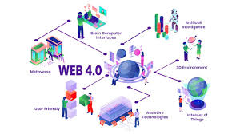

Web 4.0, the Symbiotic Web, represents the next stage in Internet evolution. In this stage, artificial intelligence (AI), machine learning, and connected devices converge to create a seamless and highly intuitive digital ecosystem. Web 4.0 focuses on interconnecting humans, machines, and systems, enabling smarter, more autonomous interactions and hyper-personalized experiences. It aims to make the web predictive, context-aware, and capable of real-time decision-making, ultimately blurring the line between physical and digital realities.
• Tailored experiences based on user behavior and preferences.
• Devices, platforms, and systems work seamlessly together.
• Enhanced immersive experiences in industries like education, retail, and entertainment.
• AI-driven applications continuously learn and improve from user interactions.
• Voice, gesture, and brain-computer interfaces for intuitive user control.
• Real-time decision-making by smart devices and bots.
Web 4.0 powers smart cities by integrating IoT devices, sensors, and AI to optimize energy use, traffic management, and public services. Smart homes and connected devices work harmoniously to create more efficient and sustainable living environments.
With AI and wearable devices, Web 4.0 facilitates real-time health monitoring, predictive diagnostics, and personalized treatment plans. Patients can benefit from improved care and faster interventions.
Web 4.0 transforms education and entertainment through AR/VR experiences, enabling immersive online classrooms and interactive gaming environments tailored to individual preferences.
Web 4.0 ensures secure, transparent financial transactions and decentralized services, redefining how businesses operate in finance, supply chain management, and data sharing.
